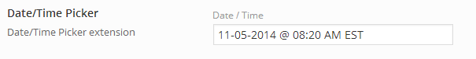

The Redux Date-Time Picker (DTP) extension is a new way to select dates and times for use in text fields. The DTP contains several modes based no how you would like to display time and date data. Include all date-time info in one text box? No problem! Split the time into its own text box? No problem! Have need to set ranges for dates or times? We’ve got you covered there too!
Getting Started
To understand how to use extensions, you should read this article on Loading Extensions. To shortcut the process, you should use the Redux Generator. Please be aware that a working knowledge of PHP and CSS is required to properly use this field. Should you not be familiar with one or the other (or both), please refer to the basic guides to get you started: Getting Started with PHP, CSS Introduction.
Arguments
| Name | Type | Default | Description |
| type | string | ‘datetime’ | Value identifying the field type. |
| id | string | Unique ID identifying the field. Must be different from all other field IDs. | |
| title | string | Displays title of the field. | |
| subtitle | string | Subtitle display of the field, situated beneath the title. | |
| desc | string | Description of the field, appearing beneath the field control. | |
| class | string | Appends any number of classes to the field’s class attribute. | |
| compiler | bool | false | Flag to run the compiler hook. More info |
| date-format | str | ‘mm-dd-yy’ | String to assign the format of the date output. For more info, please see ‘Date Formatting’ below. |
| time-format | str | h:mm TT z’ | String to assign the format of the time output. For more info, please see ‘Time Formatting’ below. |
| required | array | Provide the parent, comparison operator, and value which affects the field’s visibility. More info | |
| date-picker | string | true | Flag that sets the display or hiding of the date picker portion of the picker window. |
| time-picker | bool | true | Flag that sets the display or hiding of the time picker portion of the picker window. |
| split | bool | false | Flag to set whether the date and time will be separated into their own fields. See ‘Split Mode’ below. |
| separator | string | ‘ ‘ (two spaces) | String that appears between the date and time when split more is false. Blanks or characters may be used. |
| control-type | string | ‘slider’ | string command determining the interface of the time picker. Choose between select slider. |
| placeholder | string/array | Text to display in the input when no value is present. See ‘Placeholder Options’ below. | |
| num-of-months | int | The number of calendar months to display in the datepicker. | |
| timezone-list | array | An array of timezones values used to populate the timezone select: array('value' => 'EST', 'label' => 'Eastern'). The value should be the offset number in minutes. So “-0400” which is the format “-hhmm”, would equate to -240 minutes. |
|
| timezone | int/string | Default timezone to display in the timezone list. This is the offset in minutes. If null the browser’s local timezone will be used. If your timezone is “-0400” you would use -240. For backwards compatibility you may pass “-0400”, however the timezone is stored in minutes and more reliable. | |
| hour-min | int | The minimum hour allowed for all dates. | |
| hour-max | int | The maximum hour allowed for all dates. | |
| minute-min | int | The minimum minute allowed for all dates. | |
| minute-max | int | The maximum minute allowed for all dates. | |
| date-min | int/array | Array of minimum month, day, year values. See ‘Min/Max Date Options’ below. | |
| date-max | int/array | Array of maximum month, day, year values. See ‘Min/Max Date Options’ below. | |
| hint | array | Array containing the content and optional title arguments for the hint tooltip. More info |
Placeholder Options
The placeholder argument, if used, must be set in accordance with the split argument. Consider the following field arguments.
When split is set to true
'placeholder' => Array (
'date' => 'Date',
'time' => 'Time'
)
When split is set to false
'placeholder' => 'Datetime'
Min/Max Date Options
The date-min and date-max arguments accept either an integer value or the array value shown in the table below. When setting the date-min and date-max arguments as integers, the date-min argument begins the selectable range with the number of days beginning at the current date. Setting it to 0 begins the selectable range at today’s date, setting it to 1 begins on the day after the current date, and so on. The date-max argument as an integer sets the number of days in the actual range. Setting it to 30 would create a 30 day range.
Alternatively, setting the date-min and date-max ranges as an array of month, day, and year values allows you to select a date specific range at any point in the calender.
| Name | Type | Default | Description |
| month | int | The one or two digit integer expressing the month. | |
| day | int | The one or two digit integer expressing the day. | |
| year | int | The four digit integer expressing the year. |
Split Mode
When split mode is set to true:
{kind=link}
When split mode is set to false:

{kind=link}
Example Declaration
array (
'id' => 'opt-date-time',
'type' => 'datetime',
'title' => 'Date/Time Picker',
'subtitle' => 'Date/Time Picker extension',
'split' => false,
'separator' => ' @ ',
// Optional timezone list
'timezone-list' => array(
array('value' => -300, 'label' => 'Eastern'),
array('value' => -360, 'label' => 'Central'),
array('value' => -420, 'label' => 'Moutain'),
array('value' => -480, 'label' => 'Pacific')
),
// Alternative method to display time zone data
// 'timezone-list' => array(
// array('value' => 'EST', 'label' => 'Eastern'),
// array('value' => 'CST', 'label' => 'Central'),
// array('value' => 'GMT', 'label' => 'Moutain'),
// array('value' => 'PST', 'label' => 'Pacific')
// ),
'timezone' => '-300'
// Optional Min/Max hour values
'hour-min' => 8,
'hour-max' => 16,
// Optional Min/Max minute values
'minute-min' => 20,
'minute-max' => 40,
// Optional Min/Max date values.
// Creates a selectable date range between the current date
// and 30 days from the current date.
'date-min' => 0,
'date-max' => 30,
// Alternative Min/Max date values.
// Selects a selectable date range between 10/5/2014 to 11/15/2014
// 'date-min' => array(
// 'month' => 10,
// 'day' => 5,
// 'year' => 2014
// ),
// 'date-max' => array(
// 'month' => 11,
// 'day' => 15,
// 'year' => 2014
// )
),
Example Usage
This example in based on the example usage provided above. Be sure to change $redux_demo to the value you specified in your opt_name argument.
global $redux_demo; // When split mode is set to false. echo 'Datetime output: ' . $redux_demo['opt_date-time']; // When split mode is set to true. echo 'Date output: ' . $redux_demo['opt-date-time']['date']; echo 'Time output: ' . $redux_demo['opt-date-time']['time'];
Date Formatting
Format a date into a string value with a specified format. The format can be combinations of the following:
- d – day of month (no leading zero)
- dd – day of month (two digit)
- o – day of the year (no leading zeros)
- oo – day of the year (three digit)
- D – day name short
- DD – day name long
- m – month of year (no leading zero)
- mm – month of year (two digit)
- M – month name short
- MM – month name longy – year (two digit)
- y – year (two digit)
- yy – year (four digit)
- @ – Unix timestamp (ms since 01/01/1970)
- ! – Windows ticks (100ns since 01/01/0001)
- ‘…’ – literal text” – single quoteanything else – literal text
Time Formatting
Format a time into a string value with a specified format. The format can be combinations of the following:
- H – Hour with no leading 0 (24 hour)
- HH – Hour with leading 0 (24 hour)
- h – Hour with no leading 0 (12 hour)
- hh – Hour with leading 0 (12 hour)
- m – Minute with no leading 0
- mm – Minute with leading 0
- s – Second with no leading 0
- ss – Second with leading 0
- l – Milliseconds always with leading 0
- c – Microseconds always with leading 0
- t – a or p for AM/PMTA or P for AM/PM
- tt – am or pm for AM/PMTTAM or PM for AM/PM
- z – Timezone as defined by timezoneListZTimezone in Iso 8601 format (+04:45)
- ‘…’ – Literal text (Uses single quotes)